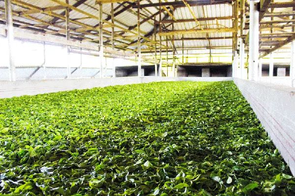
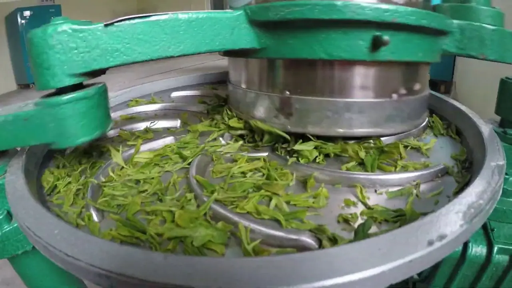
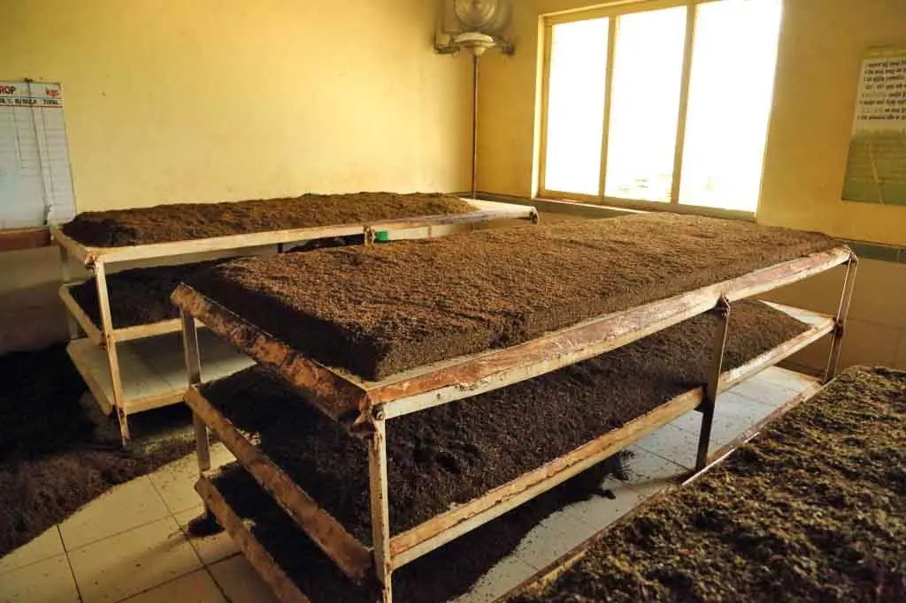
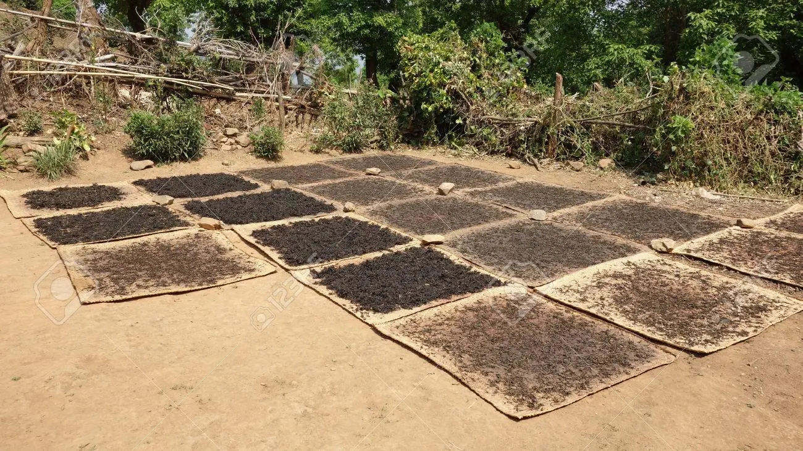
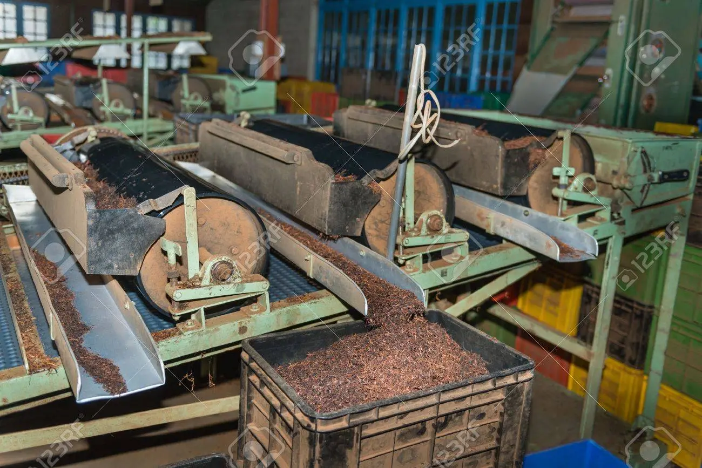

Tea Manufacturers in Sri Lanka

Ceylon's well known Tea Manufacturers
There area many different varieties of Tea available in Sri Lanka. Each Tea type has a unique flavour to it and each Tea type offers different health benefits. All the different flavours of Tea typically come from the same plant but it is the soil type and the climate that provides each plant a unique taste. Amongst all of the wonderful flavours Sri Lankans mostly enjoy Black Tea with strong Milk and Sugar. Here are some of the Tea Types that Sri Lanka has to offer:
- Withering:

At this stage the leaves are put onto long tables which contain a mesh that would often have a ventilation system built beneath itself. Since most of the young tea leaves have some moisture in it, the ventilation system would reduce the moisture by about 60%. Withering is considered to be of the critical stages.At this stage the leaves are put onto long tables which contain a mesh that would often have a ventilation system built beneath itself. Since most of the young tea leaves have some moisture in it, the
- Rolling:

At this stage the leaves are put onto long tables which contain a mesh that would often have a ventilation system built beneath itself. Since most of the young tea leaves have some moisture in it, the ventilation system would reduce the moisture by about 60%. Withering is considered to be of the critical stages.At this stage the leaves are put onto long tables which contain a mesh that would often have a ventilation system built beneath itself. Since most of the young tea leaves have some moisture in it, the
- Fermenting:

At this stage the leaves are put onto long tables which contain a mesh that would often have a ventilation system built beneath itself. Since most of the young tea leaves have some moisture in it, the ventilation system would reduce the moisture by about 60%. Withering is considered to be of the critical stages.At this stage the leaves are put onto long tables which contain a mesh that would often have a ventilation system built beneath itself. Since most of the young tea leaves have some moisture in it, the
- Drying:

At this stage the leaves are put onto long tables which contain a mesh that would often have a ventilation system built beneath itself. Since most of the young tea leaves have some moisture in it, the ventilation system would reduce the moisture by about 60%. Withering is considered to be of the critical stages.At this stage the leaves are put onto long tables which contain a mesh that would often have a ventilation system built beneath itself. Since most of the young tea leaves have some moisture in it, the
- Sorting:

At this stage the leaves are put onto long tables which contain a mesh that would often have a ventilation system built beneath itself. Since most of the young tea leaves have some moisture in it, the ventilation system would reduce the moisture by about 60%. Withering is considered to be of the critical stages.At this stage the leaves are put onto long tables which contain a mesh that would often have a ventilation system built beneath itself. Since most of the young tea leaves have some moisture in it, the